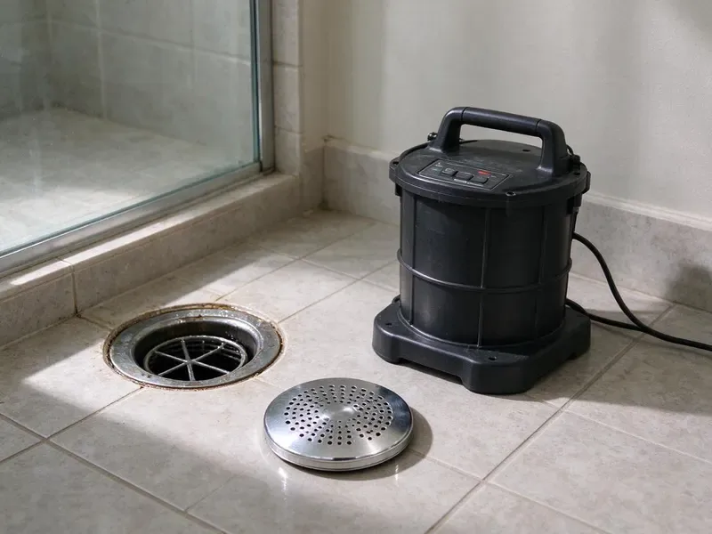

Drain Cleaning in St. Louis Park, MN
From greasy kitchen lines to hair-packed shower drains, our St. Louis Park, MN plumbers remove the blockage and show you the cause.
- Camera Checks Available
- Licensed Minnesota Plumbers
- Fast Drain Service
- No Acid or Caustic Chemicals
Done Plunging? Get the Line Cleaned in St. Louis Park, MN
We clean kitchen, bath, laundry and main lines with machines sized for the pipe.
Drain Cleaning in St. Louis Park, MN for Every Fixture in the House
CNV Plumbing handles everything from one slow bathroom sink to a main line backing up into the tub. The first question is what is actually in the pipe. Wipes need a different head than roots, and grease needs a different one than scale, and we tell you how to keep that specific clog from returning.
Work we handle every week:
- Residential and light commercial drains
- Drum and sectional cable machines sized from sink to main
- Camera inspection to confirm full flow after cleaning

Additional Drain Services Services in St. Louis Park, MN
From stubborn kitchen clogs to main sewer backups, our drain services in St. Louis Park, MN clear the line and keep it clear with camera-verified results.


Customers
Why Choose CNV Plumbing for Drain Cleaning in St. Louis Park, MN?
Clear pricing is half the job. You get the number before the cable comes off the truck. If the camera turns up something bigger than a clog, we stop, show you the footage on the screen, and lay out what a spot repair or a liner would involve, then let you decide without any pressure to do it today.
- Real Equipment, We carry sectional machines, jetters and sewer cameras, so the right tool is already on the truck.
- Right-Sized Tools, Small drum machines on fixture lines and heavier sectional cables on mains keep older pipe from being damaged.
- Roots and Soil, We see how tree roots and settling ground affect sewer lines around St. Louis Park.
Citywide Coverage
Every neighborhood of St. Louis Park gets drain service from CNV Plumbing. Same-day appointments cover the older parts of town and the newer builds. Our trucks carry machines for cast iron, clay and plastic pipe, so the age of your home does not change how fast we can help.
Experienced Team
These techs clear clogs every day and know how mineral scale builds up and catches grease and hair. They read the cable as it turns. Through the cable alone, they can usually tell if they hit grease, roots or broken pipe.
Safety-First Approach
We follow local plumbing codes in St. Louis Park on every job, including permits on any repair that needs one. Cleaning itself needs no permit. If we add a cleanout or replace pipe, the work gets pulled, done and inspected the way your city requires.
Trusted Certified St. Louis Park Plumbing Services Professionals
At CNV Plumbing, we take pride in licensed, certified plumbing services throughout St. Louis Park, MN. Those papers on the wall mean something. Our plumbers hold recognized industry credentials, and they follow strict safety and quality rules on every repair, installation and maintenance call we run.
Call Us Now PHCC Plumbing Contractor Recognition
PHCC Plumbing Contractor Recognition Better Business Bureau (BBB) Accreditation
Better Business Bureau (BBB) Accreditation Angi Certified Pro
Angi Certified Pro ISO 9001 Quality Management Certification
ISO 9001 Quality Management CertificationWhat Our St. Louis Park, MN Drain Plumbers Clean
Office and Retail Drains in St. Louis Park, MN
Restroom batteries, mop sinks and floor sinks all clog in their own way. Paper towels flushed in a public restroom cause most of them. Our crew handles floor sinks, mop sinks and restroom lines outside of business hours when that works better for you, and you get a written report for your maintenance file.

Tub and Shower Drain Cleaning in St. Louis Park, MN
Showers clog slowly, then all at once. A hair mat forms right under the drain cover. We pull the strainer or cable through the tub overflow so the finish does not get scratched, and we clear the trap and the branch beyond it, then run the shower for a few minutes to confirm it drains at full speed with no gurgle.
Camera Inspection After Drain Cleaning in St. Louis Park
A camera shows what the cable felt. The image stays upright as the head turns. Older cast iron tends to show scale and a worn-through bottom, and clay pipe usually shows roots at the joints, and a locator marks the depth on the surface so a repair can be dug in the right spot.
Night and Holiday Drain Service in St. Louis Park
Backups love holidays, mostly because of guests and grease. We work holidays too. You get a tech with a main line machine, hand tools and a wet vac, and the first goal is getting the line flowing, with damage photos for insurance taken before cleanup starts.
Kitchen Drain Cleaning in St. Louis Park
Grease is the big one in kitchens. Hot grease cools in the line and hardens on the pipe wall. Bits of food and soap catch on that coating until the 1-1/2 inch line is down to the size of a pencil, and we clear it with a drum machine that is safe for PVC and old cast iron alike.
Clogged Toilet Repair in St. Louis Park, MN
Toilets clog at the trapway, a tight bend inside the porcelain. A closet auger reaches it without scratching the bowl. When a cleared toilet still backs up into the shower, the real blockage is farther down the line, and we move to a bigger machine at that point. Kids' toys come out too.
Emergency Drain Cleaning in St. Louis Park, MN
Sewage coming up through a shower drain does not wait for Monday. Our phones are answered after hours too. The tech who shows up has a main line machine and a wet vac on the truck, so the first job is stopping the backup, and the second is getting enough flow back that you can use a toilet again before morning.

Drain Cleaning Cost Compared to Repairs in St. Louis Park, MN
Cleaning almost always costs less than digging. We try the cheap fix first. A line that clogs on a schedule usually has a defect, like a sag or a root entry, that cleaning cannot fix, and at that point we lay out the price of repeat cleanings next to a spot repair or a liner so you can compare.
Drain Clog Service Near Me in St. Louis Park, MN
Our trucks are stocked for sink, tub, laundry and main line work. We seldom have to come back. Local techs who know the housing stock here can tell an old cast iron line from newer PVC by the cleanout alone, and that knowledge goes straight into picking the right tool.
Our plumbers see the same drain problems around St. Louis Park over and over. Basements are the norm, so drain tile, sump pumps and perimeter drains are central to keeping homes dry. Knowing that saves time on the diagnosis. Based on the age and location of the house, we can usually guess the cause before the cable goes in.
CNV Plumbing at a Glance
- Fully licensed plumbing team covering St. Louis Park, MN
- Same-day appointments and 24/7 emergency response
- Clear written estimates, no hidden fees
- 4.8-star rated by 501+ Minnesota customers
St. Louis Park Map
St. Louis Park Information
- Population
- 49,697
- Area codes
- 952/763/612
- Service area
- St. Louis Park and towns within a 40 mile drive
- Nearby
- Edina, Minnetonka, Minneapolis, Plymouth
Scale and roots both roughen the inside of a pipe, so clogs in St. Louis Park, MN homes tend to come back faster on lines that have gone years without cleaning.
Expert Services
Reach out to CNV Plumbing for reliable plumbing work done by licensed pros in St. Louis Park, MN.
Our Specialized Plumbing Services in St. Louis Park, MN
At CNV Plumbing, you get every kind of plumbing service from one company across St. Louis Park, MN. We go from leak detection all the way to full system installations, for homes and commercial buildings, and we do it quickly at a fair price. Take a look at our core services below:


Our Drain Cleaning Steps in St. Louis Park, MN
Every drain call follows the same routine, so nothing gets skipped.
Schedule
Call CNV Plumbing at (612) 712-9569 to book a time. We give you an arrival window and a price range on the call.
Diagnose
Your plumber arrives in the window and checks the drains. We may run a camera to see what is blocking the line.
Remove the Clog
We choose cabling or jetting based on what we found. The clog comes out, and we show you what it was.
Frequently Asked Questions About Drain Cleaning in St. Louis Park
Single fixture drain cleanings in St. Louis Park run about $125 to $275. Main lines from a cleanout typically cost $175 to $450. Add more for a camera. Adding a camera inspection usually adds another $150 to $350, depending on the length of the line and the access point.
Yes, in writing. It applies to the specific line we cleaned. If that same line clogs again within the warranty period under normal use, we come back and clear it at no charge.
Not all. Sound pipe in decent shape handles jetting fine. Badly corroded cast iron, Orangeburg or clay with broken joints can be damaged, which is why we run a camera before jetting any older line in town.
No permit is needed for routine drain cleaning. Repairs are different. If the work goes beyond clearing, like new pipe or a cleanout, we will let you know about any permit first.
Hair tops the list in bathrooms. In kitchens it is grease and scraps that harden on the pipe wall a bit more with every load of dishes. Basements are the norm, so drain tile, sump pumps and foundation drainage are central to keeping homes dry. On the main, roots are the usual culprit.
We would rather you did not. Most do not fix the actual blockage. Caustic and acid products eat at older cast iron, soften some plastic joints, and do almost nothing to roots or a packed grease plug, and they make the job dangerous for whoever opens the trap next.
Jetting makes sense for repeat clogs. Grease, scale and fine roots are its targets. Snaking punches through, but jetting cleans the full circumference of the pipe, so the line stays clear longer.
Enzyme products are fine for upkeep. Caustic ones are another matter. If a caustic cleaner fails, the next person to open that drain is working in a trap full of chemical.
What Our Customers Say About Our Plumbing Experts

Karen W.
After our third pinhole leak in copper, we stopped patching. CNV Plumbing gave us a written plan room by room and repiped the house in PEX while we stayed in it. The crew covered our floors every morning and cleaned up every night.
Repiping · Bloomington, MN
James P.
Our restaurant had a slow leak at the hand sink that was rotting the cabinet base. CNV Plumbing came in at six in the morning before prep, replaced the trap and both supply lines, and was packed up before my first cook clocked in.
Commercial Plumbing · Minnetonka, MN
Nathan E.
Our tankless heater kept throwing an error code and shutting off mid shower. The tech flushed the heat exchanger, which was full of scale, and replaced a bad flow sensor. Hot water has been steady for half a year now.
Water Heater Repair · Plymouth, MNCarlos V.
Our house still had galvanized pipe, and upstairs the shower was a trickle. The crew repiped everything in PEX over three days and patched every drywall hole before they left. The pressure difference is night and day.
Repiping · Minnetonka, MN
Greg S.
I manage a small strip center with six tenants. CNV Plumbing handles our annual backflow testing and fixed a recurring clog in the shared sewer line that had been backing into the nail salon. Their reports come in clean and on time.
Commercial Plumbing · Edina, MNPatricia H.
We had a slab leak that two other companies could not find. CNV Plumbing located it in under an hour with a listening device. They rerouted the line through the attic instead of breaking up the floor, so we kept our kitchen tile.
Slab Leak Repair · Minnetonka, MN